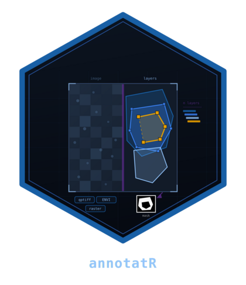
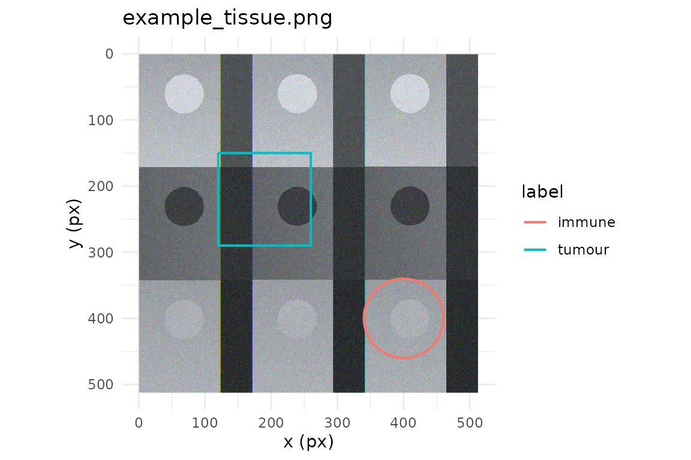

annotatR helps you draw, organise and export regions of interest (ROIs) across ordinary images, whole-slide microscopy and hyperspectral data cubes. Every annotation is stored as a validated simple-feature geometry in image pixel coordinates, so it survives round-trips to GeoJSON, QuPath and TIFF, and can be rasterised into the integer masks that downstream segmentation and classification pipelines expect.
This vignette is a five-minute, end-to-end tour. We begin from a
bundled example image, build a small project, add a couple of regions,
inspect them as a table and as a plot, summarise them, and finish by
writing a labelled mask to disk. Everything here uses only the data that
ships with the package, so you can run it verbatim; nothing touches the
network, and the single file we write goes to a temporary directory.
Function names share the at_ prefix, which makes the API
easy to explore by tab-completion once you have the broad shape in
mind.
An example image
The package bundles three small example assets, reachable through
at_example_image(): a "tissue" RGB raster, a
four-channel "multiplex" pyramid, and a 40-band spectral
"cube". We will use the tissue image throughout.
img <- at_example_image("tissue")
img
#> <annot_image> example_tissue.png
#> backend: "raster" | dtype: "uint8"
#> size: 512 x 512 px | levels: 1 | bands: 3
#> pixel size: 1 x 1 pxAn annot_image is a thin, lazy handle over a pluggable
backend rather than the pixels themselves. A handful of accessors tell
you what you are working with:
at_dims(img)
#> [1] 512 512
at_n_bands(img)
#> [1] 3
at_is_spectral(img)
#> [1] FALSE
at_bands(img)
#> # A tibble: 3 × 4
#> index name wavelength unit
#> <int> <chr> <dbl> <chr>
#> 1 1 R NA NA
#> 2 2 G NA NA
#> 3 3 B NA NAThis is an ordinary 512 by 512 RGB image with three bands and no
spectral axis. A multiplex or cube image would report several bands,
wavelengths and, often, multiple pyramid levels; the accessors above are
the same regardless, which is what lets one annotation workflow span
very different data. Coordinates follow the image convention used
everywhere in annotatR: the origin sits at the top-left corner,
y increases downward, and pixel (i, j) has its
centre at (j - 0.5, i - 0.5). Keeping that in mind makes
every ROI you draw land exactly where you expect.
Building a project
A layer groups ROIs that share a purpose and a controlled
set of labels; a project pairs an image with one or more layers
plus provenance. We create an empty layer and hand it to
at_project().
regions <- at_layer("regions", labels = c("tumour", "immune"))
project <- at_project(img, regions, name = "quick tour")
project
#> <annot_project> quick tour
#> image: "example_tissue.png"
#> layers: 1 | ROIs: 0
#> regions: 0 ROIs, labels "tumour" and "immune"Every project mutator is pure: it returns a modified copy and never alters its input, which makes annotation pipelines safe to compose and easy to reason about.
Adding some regions
Now we draw two ROIs and attach each to the regions
layer with at_add_roi(). A rectangle is given by its
corners, a circle by a centre and radius; both accept a
label drawn from the layer’s vocabulary. The native pipe
keeps the flow readable.
project <- project |>
at_add_roi("regions", at_roi_rect(120, 150, 260, 290, label = "tumour")) |>
at_add_roi("regions", at_roi_circle(400, 400, 60, label = "immune"))
project
#> <annot_project> quick tour
#> image: "example_tissue.png"
#> layers: 1 | ROIs: 2
#> regions: 2 ROIs, labels "tumour" and "immune"Each addition is recorded in the project’s edit log, so the provenance of the finished annotation set is always available.
Inspecting the annotations
at_rois() returns a tidy tibble with one row per ROI.
Geometry, area and centroid are reported at pyramid level 0, and the
table carries an sf geometry column; here we drop it to
focus on the attributes.
roi_tbl <- at_rois(project)
sf::st_drop_geometry(roi_tbl)[, c("roi_id", "layer", "label", "geom_type",
"level", "area_px", "n_vertices")]
#> # A tibble: 2 × 7
#> roi_id layer label geom_type level area_px n_vertices
#> <chr> <chr> <chr> <chr> <int> <dbl> <int>
#> 1 roi_000000001 regions tumour POLYGON 0 19600 5
#> 2 roi_000000002 regions immune POLYGON 0 11292. 65Notice that the circle has been stored as a many-vertex polygon:
annotatR keeps every ROI as a genuine simple feature, so areas, overlaps
and set operations are all exact. at_rois() also accepts
layer and label arguments when you want to
pull out a subset, and at_summary() rolls the same table up
into per-label counts and areas — a quick sanity check before you commit
to a mask.
at_summary(project)
#> <annot_summary> quick tour
#> layers: 1 | ROIs: 2
#> "immune": 1 ROI, area 11291.6 px
#> "tumour": 1 ROI, area 19600 pxSeeing them in context
at_plot_overlay() draws the ROI outlines on top of the
image and returns a ggplot object. Referencing it on its
own line renders the figure.
at_plot_overlay(project)
Rasterising to a mask
The core deliverable is a mask: an integer raster that
segmentation and classification code can consume directly.
at_mask() offers three flavours — a "binary"
foreground mask, a "labelled" mask with one value per ROI,
and a "multiclass" mask with one value per label class. We
build a labelled mask.
m <- at_mask(project, type = "labelled")
m
#> <annot_mask> labelled | 512 x 512 px | level 0
#> values: 2
#> # A tibble: 2 × 6
#> value label layer roi_id n_px colour
#> <int> <chr> <chr> <chr> <int> <chr>
#> 1 1 tumour regions roi_000000001 19600 #999999
#> 2 2 immune regions roi_000000002 11296 #E69F00A pixel is filled when its centre lies inside the polygon (the
default, touches = FALSE), using a half-open tie rule so
that shared edges are never double-counted; set
touches = TRUE if you would rather include any pixel the
polygon so much as grazes. Where ROIs overlap, the overlap
argument decides who wins — by default the region drawn last, but
"first", "max", "min" and
"error" are all available. The mask carries a
self-describing legend, and because it is a plain integer matrix
underneath you can tabulate it directly.
at_mask_legend(m)
#> # A tibble: 2 × 6
#> value label layer roi_id n_px colour
#> <int> <chr> <chr> <chr> <int> <chr>
#> 1 1 tumour regions roi_000000001 19600 #999999
#> 2 2 immune regions roi_000000002 11296 #E69F00
table(as.integer(m))
#>
#> 0 1 2
#> 231248 19600 11296Writing the mask to disk
Finally we write the mask out. at_write_mask() defaults
to a 16-bit TIFF and, alongside it, a sidecar
<path>.legend.json that records the value-to-label
mapping, pyramid level and dimensions — so the file is never a bag of
anonymous integers. We write to a temporary directory.
out_path <- file.path(tempdir(), "quick_tour_mask.tiff")
at_write_mask(m, out_path, overwrite = TRUE)
list.files(tempdir(), pattern = "quick_tour_mask")
#> [1] "quick_tour_mask.tiff" "quick_tour_mask.tiff.legend.json"Both the raster and its legend appear, ready to hand to the next
stage of your pipeline (or to reload with
at_read_mask()).
That is the whole loop: read, annotate, inspect, rasterise, export. From here, the Images and backends vignette explains how annotatR reads pyramids and spectral cubes, and how to register a backend of your own.
Use of LLM tools
Portions of this package were prepared with assistance from large language model tooling for narrowly defined, non-authorial tasks: copyediting, prose smoothing, Markdown/LaTeX formatting, scaffolding of boilerplate files (CI configs, build scripts), code refactoring. The tools used were Chat AI, the LLM service of KISSKI (GWDG), and a self-hosted Mistral Small (24B, Apache-2.0) run locally via Ollama and the ollamar R package — local inference only, with no data sent to third parties for the self-hosted model.